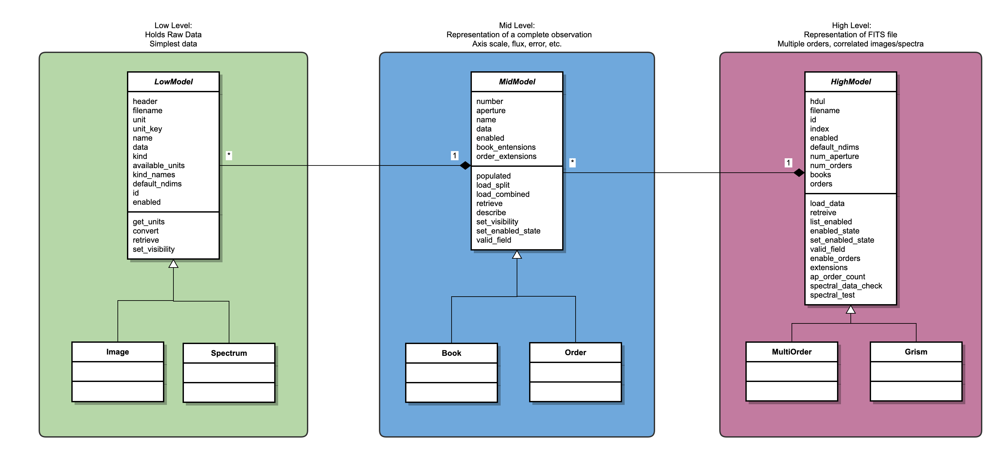

Models¶
Overview¶
The Model classes are
used to store the contents of data sets (FITS files and non-FITS) read into the
Eye. The
Eye is intended to display any data generated by SOFIA, including grism data,
spectral cubes, images, and multi-order spectra.
Currently only the spectra viewer is available, so only spectral models are
used. Spectral cubes are not yet supported. Currently, all data products from
FORCAST and EXES are being supported. We also support data in non-FITS format
using General.
While all data sets are packaged in FITS files, the details of how the data
is structured can vary wildly. To simplify the task of plotting, all data sets
are read into a collection of Model classes. The method
General() converts a non-FITS dataset into HDU format so it can be
dealt with in the same manner as a FITS file.
There are three levels of
Model classes corresponding to more minute details of the data set. The
Eye itself only interacts with the top level Model class, which allows
for a single uniform interface for the Eye to access any part of the dataset
without needing to know the details of how the FITS file was structured.
Diagram¶
{kind=link}
Model Levels¶
The Model classes are split into three layers:
High Model: Describes a single FITS file
Mid Model: Describes a single observation
Low Model: Describes a single measurement
For example, a calibrated coadded grism file from FORCAST will be loaded into:
One high model (
Grism)
Each layer is defined by an abstract class
(HighModel,
MidModel, and
LowModel)
that is implemented by a variety of subclasses. The details of
each subclass are defined below.
High Models¶
High models describe a single FITS file. They are uniquely defined by their
id, which is the same os their filename. Currently the HighModel
abstract class is implemented in two subclasses:
Grism: The grism describes a FITS file that contains both a single image and a single spectrum. Any data product from FORCAST is read into a Grism class.MultiOrder: The multiorder class describes a FITS file that contains multiple spectra and no images. This is primarily used for EXES data products.
Mid Models¶
Mid models describe a singe observation. This means all the data contained in
a mid model are related to each other and describe different aspects a single
piece of data. There are two MidModel subclasses:
Low Models¶
Low models describe a single measurement, or quantity. Here is where the
actual data resides, as well as everything needed to describe the data. This
includes the kind of data it is (e.g. flux or time), the data’s units, and
the data’s name (e.g. “flux” or “exposure”). There are two
LowModel subclasses:
Interaction Between Levels¶
Interactions between the model levels is tightly controlled and abstracted as much as possible. The goal is to have a model system that is as flexible as possible, so adding new datasets to the Eye’s capabilities is as painless as possible. As such each layer knows nothing about the layer above it and very little about the contents of the layer below it. They are largely self-contained. Additionally the interactions are kept generic, so the same function calls work regardless of the nature of the data.
The best example of this philosophy in action is the retrieve method. For
example, to plot a spectrum data on an axis, the Pane object needs to get
the raw data describing the flux and the wavelengths for a specific order of
a specific grism object. Rather than accessing the data directly through
a series of complicated chained indexing, each model layer implements a
“retrieve” method. Using this, the Pane object requests the raw data
(level = “raw”) of the field (“spectral_flux”) from an order (“0”) of the
Grism. The Grism find the correct Order and asks for the raw
spectral_flux data. The Order finds the Spectrum with the the
“spectral_flux” name and asks for its raw data. The Spectrum returns
the numpy array containing the raw data back up the chain until the Pane
gets. The same process happens for the “wavepos” data and now Pane can
plot a spectrum. This seemingly convoluted process exists so the inner
relations between the model layers are free to change at any point in the
future and only the “retrieve” method will need to be updated. The Pane
class has no need to know how the models are structured, only how to ask the
Grism for data. This process also allows for proper error checking to
ensure only valid data is returned and invalid requests do not crash the Eye.
Reading in Data¶
Loading High Model¶
Initializing a HighModel and populating it with data is initialized by the
interface contained in the
Model class.
The interface has only one method add_model, which accepts either a
filename or a FITS header data unit list (HDUL). If a filename is given, the
file is opened to obtain an HDUL. Based on the instrument name contained the
in “INSTRUME” keyword of the header, the correct HighModel
subclass is
instantiated with the full HDUL following the logic in
Selection Rules for HighModel Subclasses.
Instrument |
|
|---|---|
FORCAST |
|
EXES |
|
Loading Mid Model¶
The HDUL is passed to the load_data method of the appropriate
HighModel.
The next step is simple for a MultiOrder object. A number of
Order objects are
created equal to the number of orders in the
HDUL header keyword “NORDERS”. A Grism object must first determine
the correct mixture of
Book and
Order objects that are
required to accurate encapsulate the data (there can be either one or zero of
each kind, in any combination). Currently this is decided by examining the
file description contained in the file name, as summarized in
Selection Rules for Grism Contents. This is not reliable, however, and will be improved in
future releases.
Grism Structure |
File Codes |
|---|---|
Contains no spectra |
APS, BGS, CLN, DRP, LNZ, LOC, STK, TRC |
Contains no images |
CAL, CMB, IRS, MRG, RSP, SPC |
Contains both |
COA, |
An order is loaded in by passing the HDUL, the filename, and the order’s
number to Order. Different data products lay out the spectral
data across the HDUL in two different formats: split and combined. For an
order to be valid, for each pixel in the spectrum it must contain the
corresponding wavelength, the measured flux, and the associated flux error.
An order can have the instruments response and the atmospheric
transmission for each pixel as well. A split order will have each parameter
in a separate extension of the HDUL, while a combined order will have all
data in a single extension. The split format is the standard for calibrated
FORCAST products, but EXES and earlier FORCAST products will use the combined.
The Order initialization determines what format to use based on the
dimensions of the HDUl. If the HDUL contains only one extension, then it must
be a combined order. Otherwise, it is assumed to be a split order. Since this
is based on the total size of the HDUl and not just the spectral parts, it
will assume that all grism data sets with an associated image use the split
format.
Loading a combined order requires assumptions about how the dataset has been written. All parameters are combined into a single two dimensional numpy array where each row corresponds to a measured parameter and each column corresponds to a pixel in the spectrum. However what parameter is in each row is not contained anywhere in the HDUL, so it must be assumed using the pattern in Layout of Combined Order.
Row |
Parameter |
Label |
Unit Keyword |
Kind |
|---|---|---|---|---|
1 |
Wavelength |
wavepos |
XUNITS |
wavelength |
2 |
Flux |
spectral_flux |
YUNITS |
flux |
3 |
Flux Error |
spectral_error |
YUNITS |
flux |
4 |
Total Transmission |
transmission |
None |
scale |
5 |
Instrument Response |
response |
None |
scale |
Each row in the HDUL’s data is split off and passed to the
Spectrum
initializer with the name of the “Label” column and
the kind of the “Kind” column. The name used is the same as the extension
name for the same parameter in split orders, and the kind is used to define
what unit conversions are possible for the data. Not all combined orders have
all the parameters listed, so the loading process iterates through the rows
available, assuming they all follow this same structure.
Loading a split order is easier as fewer assumptions are made. Each parameter
has been assigned its own extension in the HDUL, so to load the order merely
requires passing each extension to the Spectrum initializer. The
name is the same as the extension’s name so no assumptions are made.
There are no assumptions as to the order of the each parameter, either in
relation to each other or in the HDUL as a whole, as the entire HDUL is
parsed. This means any extensions that actually represent images are also
checked here. To prevent attempts to parse an image into a spectrum, the
shape of the extension’s data array is checked. Only arrays with one
dimension are parsed into a Spectrum object while arrays with two
dimensions are passed.
The image version of an Order is the
Book class. It
follows much of
the same structure as the Order` class in that it instantiate a
series of
Image
objects for each parameter contained in the FITS file.
The data for each parameter is a two dimensional numpy array. The parameters
might be split across several extensions in the HDUL or they might be
combined into a single extension whose data is a three dimensional array. In
the case of a combined HDUL the data is split off into the corresponding
parameters and passed into an individual Image object. This requires
assumptions about the structure of the data cube which have not been
implemented yet as image viewing is not a feature of the Eye.
Loading Low Model¶
The low models available are
Image and
Image.
A particular LowModel` instance is unique defined by the HUDL’s
filename and
a “name” (either pulled from the extension or given by the parent
Order). An additional important parameter is “kind”, which
describes what type of data the model will hold. If the “kind” is not
passed in when the LowModel is initialized then it is determined from
the “name”, following the pattern in Available Kinds of Low Models.
Low Model |
Kind |
Matching Names |
|---|---|---|
Image |
scale |
transmission |
position |
aperture_trace |
|
unitless |
badmask |
|
spatial_map |
||
flux |
flux |
|
error |
||
spectral_flux |
||
spectral_error |
||
time |
exposure |
|
Spectrum |
scale |
transmission |
response |
||
response_error |
||
unitless |
spatial_profile |
|
flux |
spectral_flux |
|
spectral_error |
||
wavelength |
wavepos |
|
slitpos |
||
position |
slitpos |
The “kind” is important as it determines what units are valid for each
LowModel, as well as determining if a dataset can be added to a plot
with exiting data on it (only matching kinds can be plotted against each other
without utilizing overplots). Aside from the different available “kind”s
and the data shape, the Spectrum and Image classes are very
similar.
In addition to characterizing the type of data, low models oversee unit
conversions. The actual conversion is done in by making calls to the
unit_conversion
module, but the low models configure the calls. The unit_conversion
module utilizes the astropy.units package to handle the details the
actual conversion.